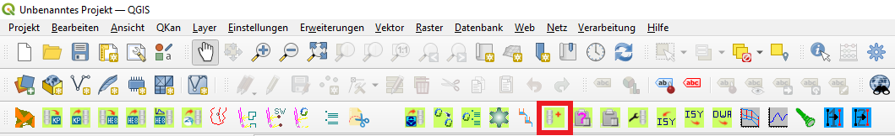

Vorbereitung¶
Die Daten, die in diesem Workflow benutzt werden stehen in dieser ´Excel-Datei <https://fh-aachen.sciebo.de/s/Bvbz2c9cbCYDkaG>`_ zum download bereit.
Falls QKan noch nicht auf dem Rechner installiert ist, ist hier eine Anleitung zur Installation des QKan Plugins zu finden.
Zu Beginn eines jeden Projektes muss eine neue QKan-Datenbank erzeugt werden.
Über einen Klick auf das Icon „Neue QKan-Datenbank erstellen“ (siehe Bild) öffnet sich ein Fenster für die automatische Erzeugung einer neuen Datenbank. Hierfür muss als erstes der Pfad und der Name der Datenbank gewählt werden und das gewünschte Projektionssystem (hier: ESPG:25832 - ETRS89 / UTM zone 32N) gewählt werden. Als letztes wird das entsprechende Projekt gewählt. Das Fenster sollte nun vollständig ausgefüllt sein und kann mit „OK“ geschlossen werden.

Zur Orientierung und ansprechenderen Darstellung sollte ein passender Kartendienst hinterlegt werden. Über „Strg + L“ wird die Datenquellenverwaltung geöffnet. Unter „WMS/WMTS“ kann ein entsprechender Kartendienst gewählt werden. Für dieses Projekt wird der Kartendienst (mit einem Klick auf „neu“) „DTK Open Data NRW“ genommen mit der URL „https://www.wmts.nrw.de/geobasis/wmts_nw_dtk“. Nachdem die Eingaben mit „OK“ bestätigt wurden, werden über „Verbinden“ die entsprechenden Kachelsätze geladen. In dem entsprechenden Layer, kann die gewünschte Karte gewählt werden (hier: DTK Farbe EPSG_25832…)

Die Karte erscheint nun in den Layern des QKan-Projektes. Empfehlenswert ist es Karten in einem eigenen Layer zu hinterlegen. Um die Karte sich anzeigen zu lassen kann über einen Rechtsklick auf den entsprechenden Layer die Option „Auf Layer zoomen“ ausgewählt werden. Nun sollte die Karte im Fenster erscheinen.